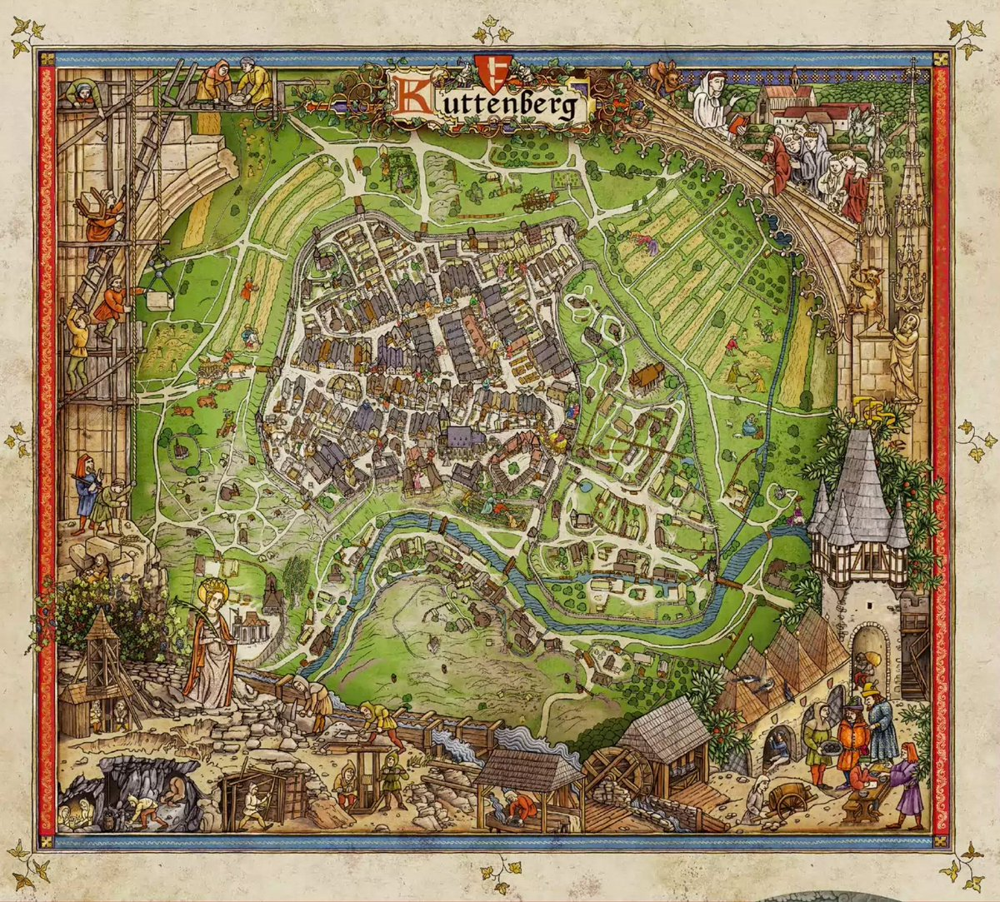
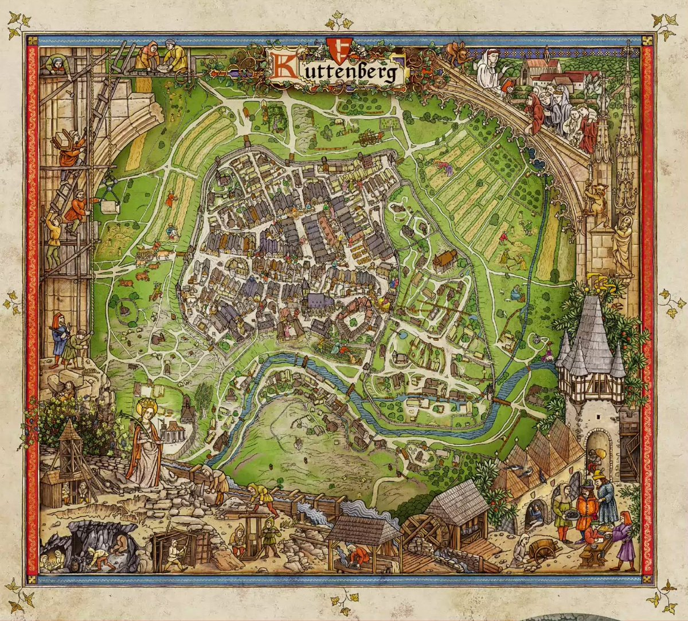

Карта локацій KCD II
Куттенберг та околиці — ключові локації гри Kingdom Come: Deliverance II. Тут гравець може відвідати річки, замки, табори, села та інші важливі місця.
Карта локації Куттенберг
Інші локації


Куттенберг та околиці — ключові локації гри Kingdom Come: Deliverance II. Тут гравець може відвідати річки, замки, табори, села та інші важливі місця.